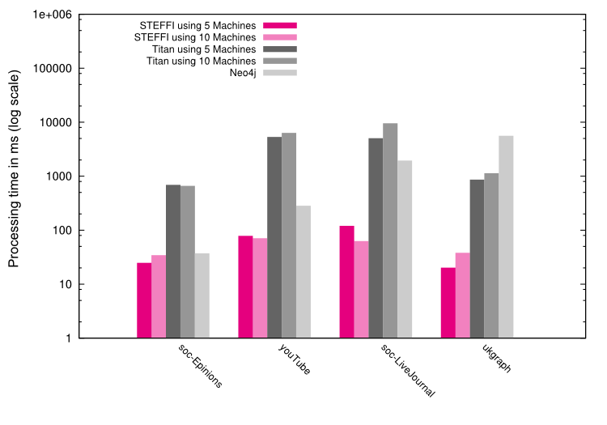

-
Welcome to STEFFI
STEFFI is a distributed graph database fully in-memory and amazingly fast when it comes to querying large datasets.
As a scalable graph database, STEFFI's performance can directly be compared to Neo4j and Titan. It provides its users with a clear competitive advantage when it comes to complicated traversal operations on large datasets. Speedups of up to 200 have been observed when comparing STEFFI with its alternatives.
More than an alternative to existing solutions, STEFFI opens up new possibilities for high-performance graph storage and manipulation.
Main features
- in-memory storage for a fast random access
- distributed parallel computing for high-speed graph queries
- graph traversal engine for graph processing
- scalability for a growing data
- implementing the Blueprints API from tinkerpop for an enchanced accessibility
Recommended for
- fast recommendation engines (e-commerce, telecommunications, finance, ...)
- large biological networks analysis (biopharma, healthcare, ... )
- security networks management & real-time fraud detection (bank, public institutions, ...)
- complex network & data center management (telecommunications, e-commerce, ...)
- and much more!
Availability
STEFFI is currently in its incubation phase within EURA NOVA. Once the code is mature and stable enough, STEFFI will be provided via this website under the Apache Licence Version 2. If you would like to know more about this project evolution, do not hesitate to subscribe to our mailing list or contact EURA NOVA.
-
Proven performances
STEFFI has been measured against its competition. Here are the results.
The experiments were performed using 4 graph datasets:
| Name |
Description |
Size metrics |
| soc-Epinions |
A directed graph representing
the who-trust-whom online social
network of a general consumer
review site Epinions.com |
|
| youTube |
An undirected graph representing
the Youtube social network |
|
| ukgraph |
A directed graph representing a
segment of a snapshot of the web
network in UK |
|
| soc-LiveJournal |
A directed graph representing
LiveJournal |
|
Next figure shows the results (log-scale) of the traversal tests performed on the 4 datasets: the average execution time of 200 traversals at maximum 3 hops between two vertices having at least one path. We compare our results achieved on 5 and 10 machines to Neo4j and Titan on 5 and 10 machines.

Neo4J vs. STEFFI
- For the larger datasets, STEFFI gets better results than Neo4J (up to x200 faster for ukgraph).
- Neo4J's performance is more negatively affected by the large graphs than STEFFI's performance. Indeed, if the graph is larger, Neo4J will be able to load in the cache only a small portion of the graph so it will have to read from the disk more frequently.
- Neo4J is slower for all datasets sizes except the smallest one (75K vertices) where performances are similar.
Titan vs. STEFFI
- Thanks to its distributed parallel computing, STEFFI performs better (up to x150 faster for soc-LiveJournal) in all the traversal configurations for all the datasets.
- As Titan traversals run on a single machine there is a considerable amount of network communication to obtain graph data and the computation power of Titan is limited to the capacity of a single machine.
- Another factor that makes STEFFI perform better is the faster random access provided by STEFFI's in-memory storage. Although Cassandra provides a caching functionality, this cache cannot store all data from a large graph so many disk reads will be required.
{kind=link}